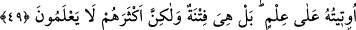

Mürâî yaptıklarının güzel olduğunu zanneder.
Var olan öz, dostun işinin hülâsasıdır.
İşin üstündeki perde kalkınca,
Halk ortada sadece post olduğunu gördü.
Meşayihten Muhammed b. Münkedir ecel geldiğinde feryâd ediyordu. Sebebinin ne
olduğunu sordular. Şöyle dedi: Hesaba katmadığım bir şeyin ortaya çıkmasından
korkuyorum.
Sehl şöyle diyor: “(Âyette bahsedilen kimseler) kendilerine birtakım ameller isbat
ettiler ve onlara güvendiler. En yüce meşhede ulaştıklarında onların saçılmış
zerreler/toztoprak olduğunu gördüler. Şu halde kim Allah’ın lütfuna güvenirse kurtulur,
kim de kendi yaptıklarına güvenirse, bunlar yüzünden karşısına helâk çıkacaktır.
Baklî (r.h.)’ın Arâis’inde şöyle geçer: “Bu âyet, başlangıç devresinde (bidâyât) elde
ettikleri şeylerle sevinenlere Allah tarafından verilmiş bir haberdir. Bu şeyler
aldananların aldanıp yaptığı ve kendi makamlarının üstünde makam olmadığını
zannettiği şeylerdendir. Onlar zanlarının aksine ma’rifetullah ehline, Allah’ı sevenlere
ve Allah âşıklarına verilen ma’rifet derecelerini, tevhîd hakîkatlerini, ince ve derin
mükâşefeleri, hayret verici müşâhedeleri görünce, bu makamlara karşı hasretlerinden
ölürler.
Bu makamdaki şu yüksek mânâlara bir bak. Çünkü anlayış sâhibi kimselere gizli
olmadığı üzere bu mânâlardan herbirini, hattâ daha fazlasını bu kelâm yüklenmiştir.
Yarın alacağınızı gönlünüzden bile geçirmediğiniz sevabları elde etmek için çalış. Bu
da senin yanında Allah Teâlâ herşeyin yerine geçene kadar ihlâsla ve tam fenâ ile olur.
49. İnsana bir zarar dokunduğu zaman bize yalvarır. Sonra, kendisine
tarafımızdan bir nimet verdiğimiz vakit, “Bu bana ancak bilgimden dolayı
verilmiştir” der. Hayır o, bir imtihandır, fakat çokları bilmezler.
“İnsana bir zarar dokunduğu zaman bize yalvarır.” Burada ferdlerinin çoğunun
yaptıkları esas alınarak insan cinsinin durumu haber verilmektedir. Yâni Allah tek
olarak anıldığı zaman müşriklerin içlerine sıkıntı basar, ilahları zikredildiğinde ise
yüzleri güler. Başlarına bir zarar, yâni hastalık, fakirlik ve benzeri kötü bir hal geldiği
zaman bu zararı savmak için, anıldığında yüzlerinin güldüğü ilâhlarına değil,
anıldığında içlerine sıkıntı basan Allah Teâlâ’ya yalvarırlar.
Burada onların durumu reddedilmekte, yaptıklarına hayret edilmekte ve sebep-sonuç
ilişkisi ile çeliştikleri ve onu tersyüz ettikleri beyân edilmektedir. Çünkü onlar inkârı